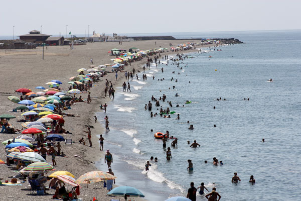

Atrás
Adra
Playa Bandera Azul de Censo
Playa Bandera Azul de San Nicolás

Playa Carboncillo
Playa Sirena Loca
Centro Azul "Museo del Mar"
Museo de Adra. Patrimonio Histórico
Molino del Lugar
Torre de la Vela
Torre de los Perdigones
Las Albuferas de Adra
Portada
Mapa